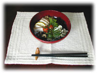
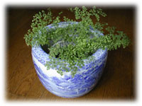

|
■鰺（あじ）フライのしあわせ
その日私は久しぶりにスーパーに行った。とくに買い物があるわけではなかったが、威勢のいい空気を吸いこみたくて。たいていいつもひとりきりで仕事をしているせいか、ときどきひと気を求めてスーパーを覗く。
「鰺フライはないの？」
太い男の声がした。見ると、惣菜のコーナーで空のカゴを持った中年の男が、白い布で頭を覆ったひとをつかまえて、尋ねている。
「鰺はないんですよ」と女のひとはこともなげに答えた。
「え？」信じられない話を聞いたといわんばかりの男。惣菜コーナーには、鶏の唐揚げや烏賊のリングフライ、きすの天ぷらなんかが所狭しとならんでいるのだから、鰺フライに向いた気持ちをほかに向けるのはそれほど難しいことではなさそうだが。彼はうーんと唸ったまましばらく棚の上を見渡していたが、くるりと背をむけ、立ち去った。
その日は、仕事仲間とおそい昼ごはんを食べていた。なんか懐かしくてね、というそこはいわゆる定食屋で、それほど広くない店の壁という壁に、品書きの紙片が貼りつけられている。そこには生姜焼きだの、野菜炒め、コロッケなどという定食のほかに、おしんこ、納豆、冷やしトマトといった単品のおかず、添え物の類も書きつけられているのだった。私はすっかりうかれて、「煮魚（かれい）定食に、枝豆。それに中の生」と叫んでいた。昼間のビールは、ちょっと後ろめたくてわくわくする。ジョッキに口を近づけようとしたそのとき、肩越しに声が飛んだ。
「鰺フライ、単品でね。それと生」
ふり返ると、ポロシャツ姿の中年の男がひとりで、いた。男がビールをぐびぐびやって、鰺フライをはぐはぐやっている気配が伝わってきた。ものの１５分で、男は立ち上がり、「ごちそうさん」と短く叫んで店を出て行った。
たまらなく鰺フライが食べたくなっていた。鰺フライ、鰺フライって何なのよ、いったい、という気持ちだった。帰り道、魚屋さんに寄り、鰺を買った。ぜいごを取り、３枚におろして衣をつけ揚げる。もしかしたら私が鰺フライをつくったのはこの日が初めてだったかもしれない。鰺フライはほんとうに美味しかった。
友だちにその話をすると、「鰺フライはちょっと貧乏ったらしい感じがするよね。すごくおいしいのに」と言う。そう言われれば、海老フライやかきフライの方がごちそうみたいな感じになる。鰺の身になって考えても、フライになるよりたたきや塩焼き、同じ揚げるのでも南蛮漬けになりたいかもしれない。
夕方、子どもたちに「きょうのごはん、何？」と聞かれ、「鰺フライ」と答えたり、「鰺フライで一杯やらない？」なんて誘ったりするしあわせを、ちょっと忘れていたかもしれないなあと思う。貧乏ったらしいとは思いたくないが、鰺フライを通過した先に、とんかつや海老フライがあるとして、通過してしまったのがなぜなのかを考えるっていうのが厨（くりや）の哲学なのじゃないかしらね。
先日、またデパートの惣菜コーナーで鰺フライに逢った。このとき「夏はポン酢でどうぞ！」と、貼り紙がしてあった。てっきりソースか醤油で食べるものと決めていたので、ちょっとたじろぐ。すると鰺フライをタルタルソースで食べるひともあるということか。タルタルソースということになると、鰺フライのしあわせの意味がまた少し変わることになるような……。でも、ま、いいか。しあわせにもいろいろなかたちがあるのだから。

■鰺フライのつくり方（４人分）
あまり大きくない鰺……………８尾
塩、こしょう……………………少々
小麦粉、パン粉…………………適宜
卵…………………………………１個
・鰺はぜいご（尾につづくギザザの骨）をとる。尾の方から包丁を入れ、そぐようにとるとうまくとれる。
・頭を切り落とし、お腹からハラワタをとり、背から包丁を入れてひらく。
・骨をとる（小骨はとらなくても大丈夫）。
・塩、こしょうして、小麦粉をつける（つけ過ぎないようにし、あとではたく）。
・つぎに卵（水を少し加えると、１個で足りる）をつけ、パン粉をつける。
・中くらいの温度（１７０度）に熱した油で、揚げる。油のなかでひっくり返すのは１度限りにすること。
※つけ合わせには、粉ふき芋、マカロニサラダ（きゅうり、きゃべつ、玉ねぎ、茹で卵、ハムまたは蒸し鶏など）はいかが？

|